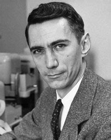

Claude Shannon

Het begin
Claude Shanon is geboren in de Verenigde staten op 30 april 1916.
De familie Shannon woonde in Gaylord, Michigan. Zijn eerste 16 jaar waren in Gaylord waar hij naar de Gaylord High School ging.
Hij was erg goed in wiskunde en elektronica, thuis maakte hij modelvliegtuigen, een radiografisch bestuurbare modelboot en een telegraafsysteem met prikkeldraad naar een vriends huis.
Ook was hij een ver familielid van Thomas Edison, de beroemde Amerikaanse uitvinder.
Toen Claude jong was werkte hij voor Western Union.
De Universiteit
Hij ging in 1932 wiskunde en elektronica studeren in de universiteit van Michigan.
In 1936 had hij 2 bachelors gehaald in wiskunde en elektronica. Daarna begon hij aan zijn graduate studies in elektrotechniek aan het MIT.
In 1937 schreef hij zijn master scriptie: "A Symbolic Analysis of Relay and Switching Circuits."
Later werkte hij die nog verder uit, dit legde de fundering voor het ontwerpen van digitale schakelingen.
Shannon kreeg zijn PhD in 1940 met zijn scriptie: "An Algebra for Theoretical Genetics."
Zijn werk
In 1940 werd Claude een nationaal onderzoeker voor de "Institute for Advanced Study in Princeton".
Hier werkte hij samen met veel bekende wiskundige en soms kwam hij ook Einstein of Gödel tegen.
In datzelfde jaar trouwde hij ook met Norma Levor, maar hij scheidde alweer een jaar later.
Toen in 1941 ging hij werken voor Bell Labs om te werken aan cryptografie en vuur-controlesystemen tijdens de tweede wereldoorlog.
In 1942 vond hij de signal-flow graphs uit en vond hij de topologische versterkingsformule tijdens het werken aan de funcite van de analoge computer
In de eerste twee maanden van 1943 kwam hij in contact met Alan Turing.
Want Turing, Brits, moest zijn methoden delen met de cryptoanalystiche dienst van de VS.
Ook was Turing geïnteresseerd in de codering van spraak en bracht daarom veel tijd door in Bell Labs.
Hier leerden ze elkaar kennen tijdens een theetijd in de kantine, en Shannon was erg onder de inruk van Turings "Universal Turing machine" want dit complementeerde ook ideeën van hem.
Aan het einde van de oorlog, september 1945, stelde Shannon een herinneringsboek op voor Bell Labs: "A Mathematical Theory of Cryptography."
Ook had hij een bewezen in een onderzoek dat de "cryptographic one-time pad" onbreekbaar was, gepubliceerd op oktober 1949.
Bij Bell Labs trouwde hij met Betty Shannon in 1949 ze hadden 3 kinderen.
Zijn latere leven en prijzen
In 1958 keerde hij terug naar MIT om te werken in de Research Laboratory of Electronics. Hij bleef werken aan het MIT tot 1978.
In zijn laatste jaren kreeg hij Alzheimer en spendeerde zijn tijd in een verzorgingstehuis tot 2001 toen hij stierf.
Hij kreeg de Stuart Ballantine Medal in 1955. Daarnaast ontving hij in 1966 de IEEE Medal of Honor de hoogste onderscheiding van de IEEE, de National Medal of Science, de Harvey Prize in 1972.
Ook is er een prijs naar hem vernoemd de Claude E. Shannon Award. De prijzen die hij ontving zijn: de Harold Pender Award in 1978, de John Fritz Medal (1983), de Kyoto Prize (1985), de Marconi Society Lifetime Achievement Award (2000)
en als laatste de National Inventors Hall of Fame (2004).
Op 30 april 2016 kreeg hij een Google Doodle omdat het dan zijn 100ste verjaardag zou zijn, ook was er een film over hem gemaakt in 2019 genaamd: "De Bit Player”